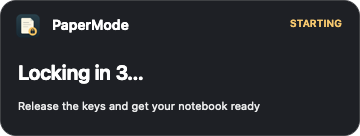
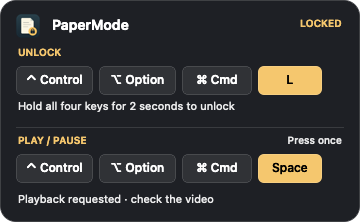

Made for the notebook-on-laptop moment.Less juggling. More learning. ↘
A CLOSER LOOK AT PAPERMODE
Small on screen. Big on breathing room.
A little preparation, a clear reminder, and your lesson stays in view.

THE COUNTDOWN · ACTUAL APP INTERFACE
01 / GET SETTLED
A moment to get your notebook ready.
Start from the menu bar or press the shortcut. A visible five-second countdown gives you time to release the keys and place your notebook over the keyboard.
Your screen stays visible. No dimmed background, no full-screen interruption.

THE LOCK REMINDER · ACTUAL APP INTERFACE
02 / STAY WITH YOUR LESSON
Your controls. Always in sight.
The compact reminder keeps the unlock shortcut visible while keyboard and pointer input are blocked. Hold all four unlock keys for two seconds to return to normal.
Need a moment to think? Lift your notebook and pause, resume, or seek through a compatible lesson in Chrome, Safari, or Firefox without unlocking.
Interface images are rendered from PaperMode’s native UI. Playback availability depends on the player. Power and some system actions remain available; external input devices are not yet verified.
CONTROL YOUR LESSON WHILE LOCKED
Easy to start. Deliberate to unlock.
The unlock reminder stays on screen. No shortcut to remember under pressure.
Start PaperMode
Get ready during the 5-second countdown.
⌃⌥⌘P
Pause / resume
Press once, then release. Compatible players only.
⌃⌥⌘Space
Back / forward 5 seconds
Seek while locked on compatible players.
⌃⌥⌘← / →
Unlock
Hold all four keys for 2 seconds.
⌃⌥⌘L
⌃ Control · ⌥ Option · ⌘ Command
BEFORE YOU SETTLE IN
A little setup. Then you’re ready.
PaperMode lives in your menu bar. Here’s how to make yourself at home.
Extract it and drag PaperMode.app into Applications.
Open PaperMode and follow the first-open steps below.
Enable Accessibility, close the welcome guide, and wait for the menu to say Ready.
Why does macOS show a warning?
This preview is ad-hoc signed and is not Developer ID signed or notarized by Apple. macOS may say it cannot verify the developer or check the app for malware.
If you trust the official download, attempt to open it once, then go to System Settings → Privacy & Security → Open Anyway. Confirm and authenticate on your Mac. Only do this for the expected verification warning; stop if macOS reports malware or a damaged app. Managed Macs may prevent this exception.
Why does it need Accessibility permission?
PaperMode needs Accessibility access to intercept input during a lock and control compatible video players. Enable PaperMode in System Settings → Privacy & Security → Accessibility.
If Start remains disabled, close Help and choose Check permission and layout in the menu. If needed, quit and reopen the copy in Applications. After replacing a build, a stale permission entry may need to be removed and granted again.
Will it work on my Mac?
The current preview is for Apple Silicon Macs. Owner testing was performed on macOS 27.2.1. macOS 13 is the build target, not a tested compatibility guarantee. Intel Macs, older macOS versions and external input devices remain unverified.
Can I control any video while locked?
Play/pause and five-second seeking work with compatible video players in Chrome, Safari, and Firefox. Player controls must be available through macOS Accessibility. Bring the intended lesson to the front before starting.
If the reminder says a control is unavailable, hold the unlock shortcut for two seconds and control the video normally.
What happens if I close my laptop?
Sleep ends the session. When your Mac wakes, PaperMode stays unlocked. Normal sessions have no automatic timeout; use the two-second unlock shortcut when you’re finished.